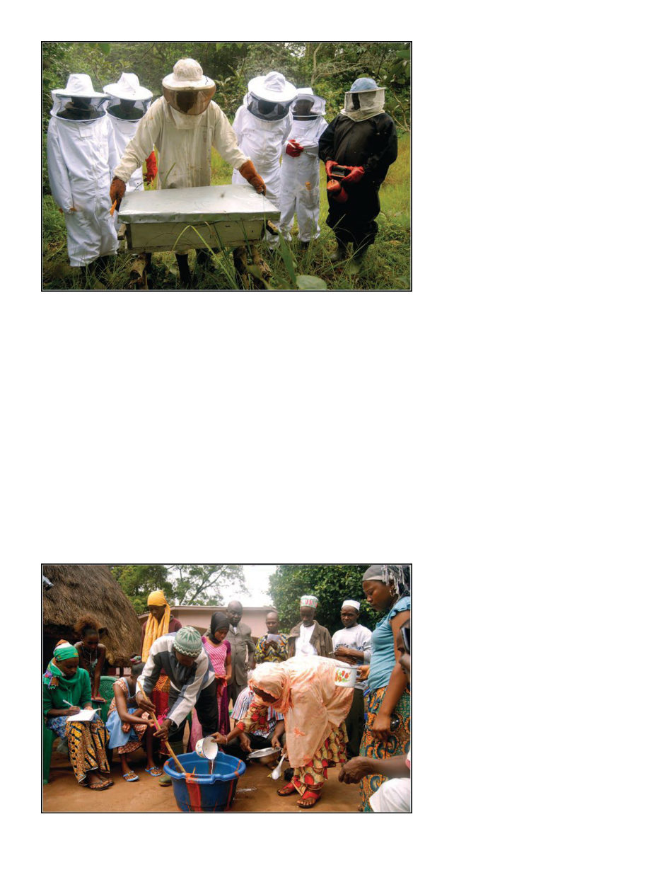

American Bee Journal
104
was and was informed this is how
gasoline is sold here.
Arriving in Labé the first time, we
stopped in front of the “tourist ho-
tel” in town but after Kamera went
in to talk to them, he came back and
we continued, without it being quite
clearly explained to me. Twenty min-
utes later we were pulling into the
cute little village of Sanpiring, where
the project was to be based. It con-
sisted of mainly rectangular cottages
and a smaller number of thatched
huts, with small fields of corn be-
tween them. The whole village was
encircled by a low outer wall, beyond
which the bush remained largely in its
natural state, goats grazed, and a few
hundred beehives sat under trees in
the surrounding area. I learned that I
would be staying in someone’s spare
room in the village, and also that “we
had a Peace Corps volunteer named
Dave here, but he died.”
Days in the village began with no
reference to a clock, when enough
participants had gathered in the
small meeting hall. All three Guinea
projects had around 30 participants
in the main group, of which about ten
would be women. Until around noon
we’d have classroom sessions on bee
biology or beekeeping methodology.
After lunch about six to eight of us
would go out for practical hands-on
beekeeping. Special thanks here are
due for California beekeeper David
Marder who donated a number of old
beekeeping suits. Rips and tears that
weren’t worth the trouble of repairing
in California were enthusiastically re-
paired overnight, fit for use the very
next day. We (aid organizations in
general) don’t like to make gift giving
a big part of these projects, as it fos-
ters the expectation that they can just
wait to get all kinds of useful material
goods from projects instead of mak-
ing them themselves, but the suits are
certainly useful for enabling partici-
pation. Lack of adequate protective
gear is a serious impediment among
the local beekeepers. I always include
a lesson on making a suit from avail-
able materials but in the meantime the
donated suits are very valuable.
Most participants came from near-
by, but a number came from distant
villages for the training, and we also
made visits to a number of other vil-
lages. The second project in 2015 was
conducted in the village of Doumba
an hour west of Labé, a verdant tree-
filled village with a greater number
of large beautiful thatched huts; and
the third project in 2016 was in the vil-
lage of Lafou on the road to Senegal,
where the Akon Lighting Africa char-
ity had blotted out the stars with elec-
tric lampposts. On this third project
we also had a Peace Corps volunteer,
Monica, join us (see also her account
of it at: https://moniinmali.word-
press.com/2016/08/02/beekeeping-t
raining/). Peace Corps had with-
drawn from Guinea during the 2014
Ebola outbreak, and she had been
posted to Mali, but then the instabil-
ity in Mali caused her to be evacuated
back to the States, but as of 2016 the
Peace Corps was back in Guinea.
For every Kenyan topbar (KTB)
hive in Guinea there are about 50
traditional hives. They are most com-
monly woven (sometimes reinforced
with not-so-picturesque modern
plastic tarp), but sometimes they’re
made from hollow logs. They’re
cheap ($0.85-$2.14 per) and involve
no management. Basically one waits
until they think it’s full, lights a fire
under it at night, and collects every-
thing. This produces very low quality
honey since inevitably brood and bees
are smashed in amongst the harvest,
so promoting topbars is a clear im-
provement. I figured as long as they
were clearly going to continue pro-
ducing and using traditional hives
they may as well improve them too,
so I suggested they add a removable
back-end like they do in Ethiopia so
they can remove the honey comb
without destroying the hive (in linear
hives the bees tend to put the brood in
the “front” and the honey in the back),
Everyone gets involved in soap making.
FAPI trainer Khalidou Balde demonstrates opening a hive.